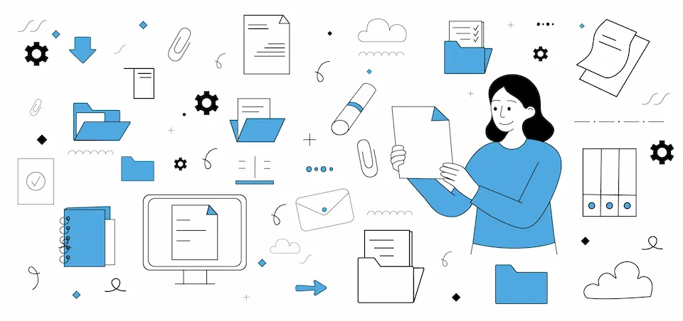

Вимоги до страхових посередників 2025
Навігатор у світі нових стандартів та регулювання НБУ
2025 рік став етапним для українського ринку автострахування. Новий Закон «Про страхування» кардинально змінив правила гри для агентів та брокерів, наблизивши їх до європейських стандартів прозорості та професіоналізму.
Ключові нововведення 2025
- Обов'язкова авторизація: Кожен страховий агент повинен бути зареєстрований у публічному реєстрі НБУ. Це ваш професійний "паспорт".
- Підвищення кваліфікації: Вимога постійного навчання та підтвердження компетенцій.
- Прозорість розрахунків: Чітке інформування клієнта про всі комісійні виплати та умови договору.
- Заборона нав’язування: Категорична вимога детально роз’яснювати умови продукту перед продажем.
Хто є хто на ринку: Види посередників
Згідно з нормами НБУ, на ринку виділяють кілька ключових категорій фахівців:
1. Страхові агенти
Представляють інтереси страхової компанії. Бувають моноагентами (одна компанія) або мультиагентами (кілька партнерів). Їхня мета — професійно підібрати продукт під запит клієнта.
2. Страхові брокері
На відміну від агентів, діють виключно в інтересах страхувальника (клієнта). Брокер — це незалежний консультант, який шукає найкращі умови на всьому ринку.
3. Додаткові страхові агенти
Юридичні особи, для яких страхування — супутні послуги (автосалони, банки, туристичні агентства).
4. Перестрахові брокери
Спеціалісти, що працюють у сегменті B2B, допомагаючи страховим компаніям передавати великі ризики іншим страховикам.
Місія сучасного посередника
Сьогодні роль агента виходить за межі простого продажу. Це кваліфіковане консультування, супровід договору під час врегулювання збитків та формування культури страхування. Кожен зареєстрований фахівець стає частиною цивілізованого ринку, де чесність та відкритість є головним капіталом.
Отримуйте послуги від професіоналів
Ми працюємо тільки з авторизованими страховими компаніями та пропонуємо прозорі умови для кожного клієнта.
ПЕРЕЙТИ ДО ВИБОРУ ПОЛІСУ